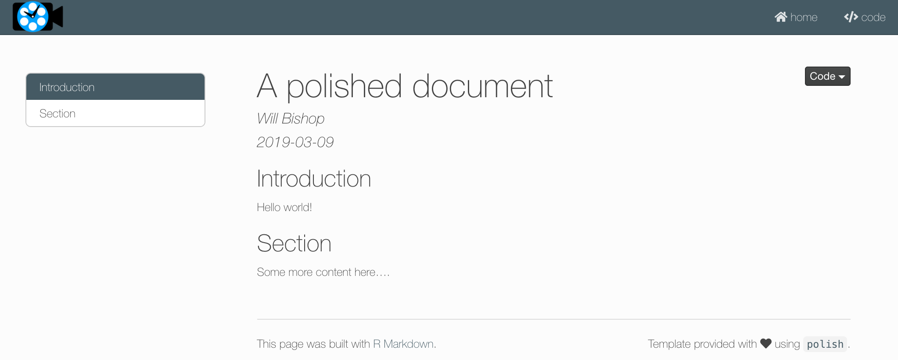

Introduction to Polish
Will Bishop
2019-03-09
introduction.RmdThe polish packages aims to make your R content shiny and beautiful. The primary method for doing this is to provide attractive templates for common R content formats (RMarkdown and flexdashboards). For starters, the package provides the polish_html RMarkdown template described below. We’d like to add more templates over time that provide similar styling and features.
Polish HTML Document
The polish_html is a styled R Markdown-to-HTML rendering function that builds on the default rmarkdown::html_document function. You can apply this report style to any R Markdown document by setting the output field to polish::polish_html in the initial Rmd header section, as shown below.
---
title: "Untitled"
author: "Your Name"
date: "2019-03-09"
output: polish::polish_html
---See below for a screenshot of a “knitted” polish_html document. You get some nice css styling, along with default options for showing a table-of-contents and code-folding. If you add values for the inputs source (for source code) and contact (for email contact), then you will also get some navbar links for those things. You can also define a home link to some homepage - this is meant to provide a breadcrumb to an RStudio Connect homepage when a published document is opened in “solo” mode on the server.

Polish HTML Markdown Template
Installing polish will also install a template for easily starting a new polish_html RMarkdown document. Create a new report from this template in RStudio by going to File –> New File –> R Markdown… in the menu-bar. Then in the pop-up, go to the “From Template” tab and pick “Polish HTML Document”. This will create a new .Rmd document with some default inputs at the top.